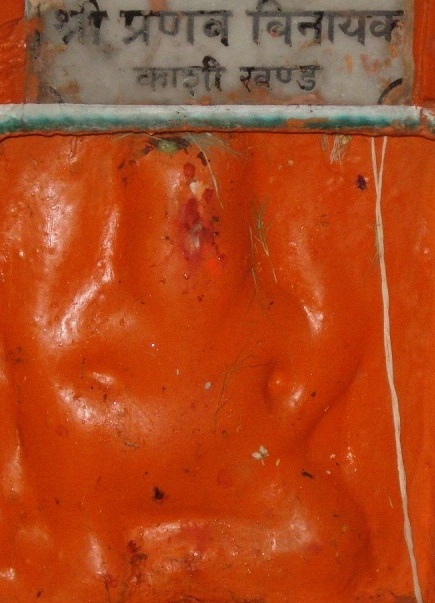

<?xml version="1.0" encoding="UTF-8"?><rss version="2.0"
	xmlns:content="http://purl.org/rss/1.0/modules/content/"
	xmlns:wfw="http://wellformedweb.org/CommentAPI/"
	xmlns:dc="http://purl.org/dc/elements/1.1/"
	xmlns:atom="http://www.w3.org/2005/Atom"
	xmlns:sy="http://purl.org/rss/1.0/modules/syndication/"
	xmlns:slash="http://purl.org/rss/1.0/modules/slash/"
	>

<channel>
	<title>Pranav Vinayak &#8211; Varanasi Temples</title>
	<atom:link href="index.html" rel="self" type="application/rss+xml" />
	<link>../../../../index.html</link>
	<description>Temples of Varanasi as referred to in Kashi Khand</description>
	<lastBuildDate>Thu, 19 Jun 2025 05:16:46 +0000</lastBuildDate>
	<language>en-US</language>
	<sy:updatePeriod>hourly</sy:updatePeriod>
	<sy:updateFrequency>1</sy:updateFrequency>
	<generator>https://wordpress.org/?v=4.6.29</generator>
	<item>
		<title>PRANAV VINAYAK</title>
		<link>../../../../vinayak-temples/pranav-vinayak/index.html</link>
		<pubDate>Fri, 07 May 2010 16:42:55 +0000</pubDate>
		<dc:creator><![CDATA[admin]]></dc:creator>
				<category><![CDATA[Pranav Vinayak]]></category>
		<category><![CDATA[Vinayak Temples]]></category>
		<category><![CDATA[pranav]]></category>
		<category><![CDATA[trilochan]]></category>

		<guid isPermaLink="false">../../../../p=109.html</guid>
		<description><![CDATA[Pranava Vinayak is located at Hiranya Garbheshwar temple, Trilochan Ghat steps. It is easy to reach this place by boat. If devotees travel by road, they can travel beyond Machhodari upto Birla Hospital and take a right turn and then walk on foot.  A devotee who regularly worships this Lord will find his  place in [&#8230;]]]></description>
				<content:encoded><![CDATA[<p>Pranava Vinayak is located at Hiranya Garbheshwar temple, Trilochan Ghat steps. It is easy to reach this place by boat. If devotees travel by road, they can travel beyond Machhodari upto Birla Hospital and take a right turn and then walk on foot.  A devotee who regularly worships this Lord will find his  place in heaven.</p>
<p><strong></strong></p>
<p style="text-align: center;"><strong>(PRANAV VINAYAK)</strong></p>
<p>&nbsp;</p>
<p><strong>&#8212;&#8212;&#8212;&#8212;&#8212;&#8212;&#8212;&#8212;&#8212;&#8212;&#8212;&#8212;&#8212;&#8212;&#8212;&#8212;&#8212;&#8212;&#8212;&#8212;&#8212;&#8212;&#8212;&#8212;&#8212;&#8212;&#8212;&#8212;&#8212;&#8212;&#8212;&#8212;&#8212;&#8212;-</strong></p>
<p><strong> </strong></p>
<p><span style="text-decoration: underline;"><strong>Kashi Khand, Chapter 57, Shlok 77</strong></span></p>
<p><strong> </strong></p>
<p><strong>गङ्गाया: पश्चिमे कूले प्रणवाव्ख्यो गणाधिप:</strong></p>
<p><strong>अवाच्यां राजपुत्राच्च प्रणत: प्रणयेद्दिवम्</strong></p>
<p>&nbsp;</p>
<p><strong>On the west bank of the Ganges, to the west of Raja Putra Ganesha, there is a Ganesha named Pranav. If a devotee merely worships this Lord, he will be taken to heaven. </strong></p>
<p><strong> </strong></p>
<p><strong>&#8212;&#8212;&#8212;&#8212;&#8212;&#8212;&#8212;&#8212;&#8212;&#8212;&#8212;&#8212;&#8212;&#8212;&#8212;&#8212;&#8212;&#8212;&#8212;&#8212;&#8212;&#8212;&#8212;&#8212;&#8212;&#8212;&#8212;&#8212;&#8212;&#8212;&#8212;&#8212;&#8212;&#8212;&#8212;</strong></p>
<p>&nbsp;</p>
<p><strong>Please watch our YouTube Video about Pranav Vinayak at following Link</strong></p>
<p>&nbsp;</p>
<h3><a href="https://www.youtube.com/watch?v=MbC7Ju8ghLk&amp;t=55s">https://www.youtube.com/watch?v=MbC7Ju8ghLk&amp;t=55s</a></h3>
<h3></h3>
<h3>TYPES OF POOJA</h3>
<p>The temple is open from 05.00 a.m. to 02.00 p.m and from 04.00 p.m. to 09.00 p.m.</p>
]]></content:encoded>
			</item>
	</channel>
</rss>
